La Métropole du Sud, entre Océan et Désert
Laâyoune (en arabe : العيون, signifiant « les sources » ou « les yeux ») est la ville la plus importante des provinces du sud du Maroc et le chef-lieu de la région de Laâyoune-Sakia El Hamra.
Fondée dans les années 1930 par les Espagnols autour d'oasis sur les rives de la vallée de la Sakia El Hamra, elle a connu un développement spectaculaire après la Marche Verte de 1975. Aujourd'hui, Laâyoune est une métropole moderne, dynamique et aérée, dotée de vastes places, de fontaines grandioses et d'infrastructures de pointe, le tout en préservant jalousement l'hospitalité légendaire de la culture nomade hassanie.
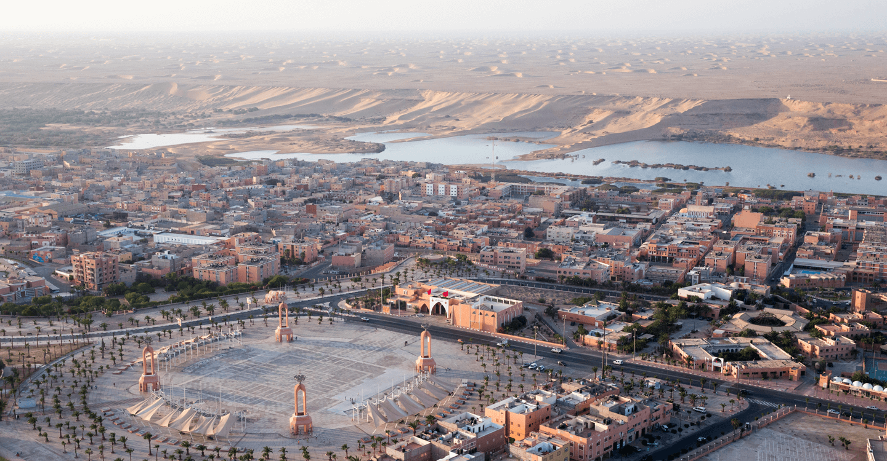
Harmonie entre sable doré et modernité urbaine
Explorez les merveilles emblématiques de Laâyoune.
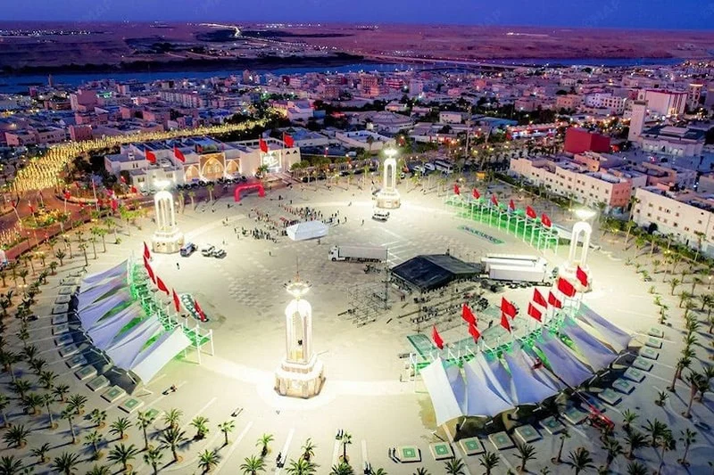
Le cœur battant et majestueux de Laâyoune. Cette immense esplanade, conçue pour les grands rassemblements et les festivités, est flanquée de quatre impressionnants monuments à colonnades. Un lieu de promenade privilégié pour les familles en fin de journée.
Localiser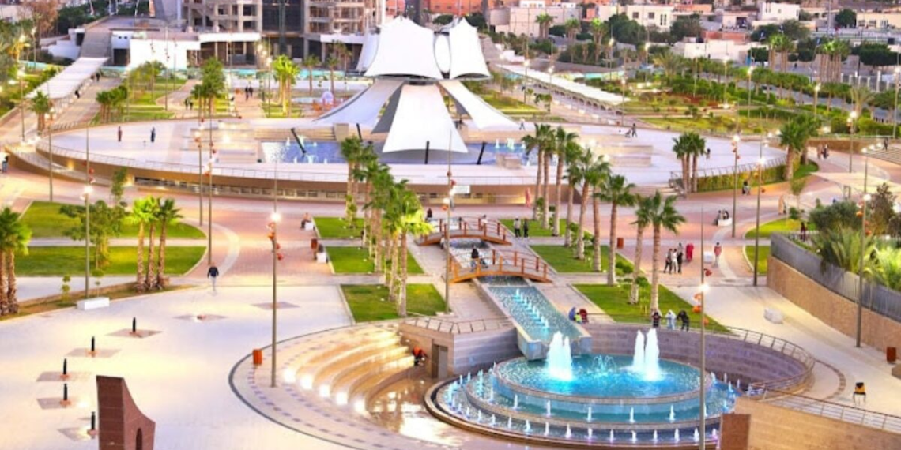
Située au cœur de Laâyoune, la Place Oum Saad est bien plus qu'un simple espace public. C'est un lieu emblématique qui incarne la vie vibrante de la ville, et une destination incontournable pour les résidents locaux et les voyageurs en quête d'une expérience authentique.
Localiser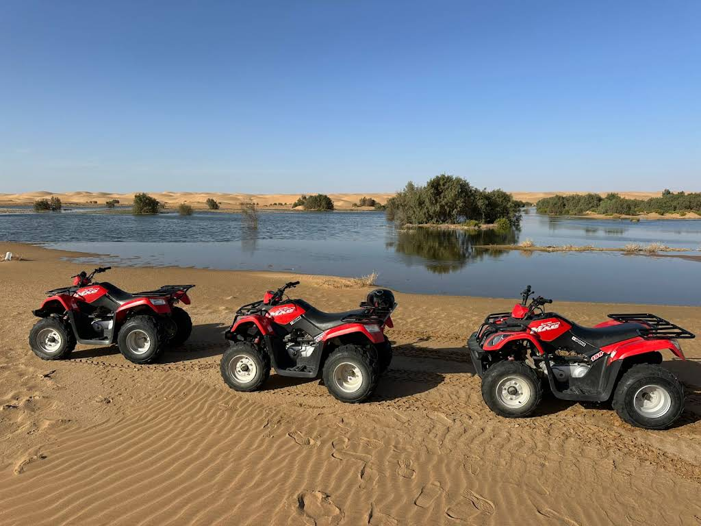
Camping Safari Laâyoune est un établissement éco-touristique combinant camping et auberge, situé en plein désert à Foum El Oued, à environ 20 km de Laâyoune. C'est l'adresse idéale pour les voyageurs en quête d'aventure saharienne et d'authenticité.
Localiser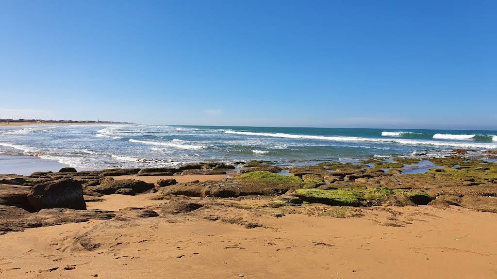
Située à environ 20 kilomètres de Laâyoune, c'est la station balnéaire de la ville. Une immense étendue de sable blanc balayée par l'Atlantique, parfaite pour le surf, la pêche ou simplement se rafraîchir en dégustant du poisson frais face à l'océan.
LocaliserSélection d'établissements prestigieux pour votre séjour.
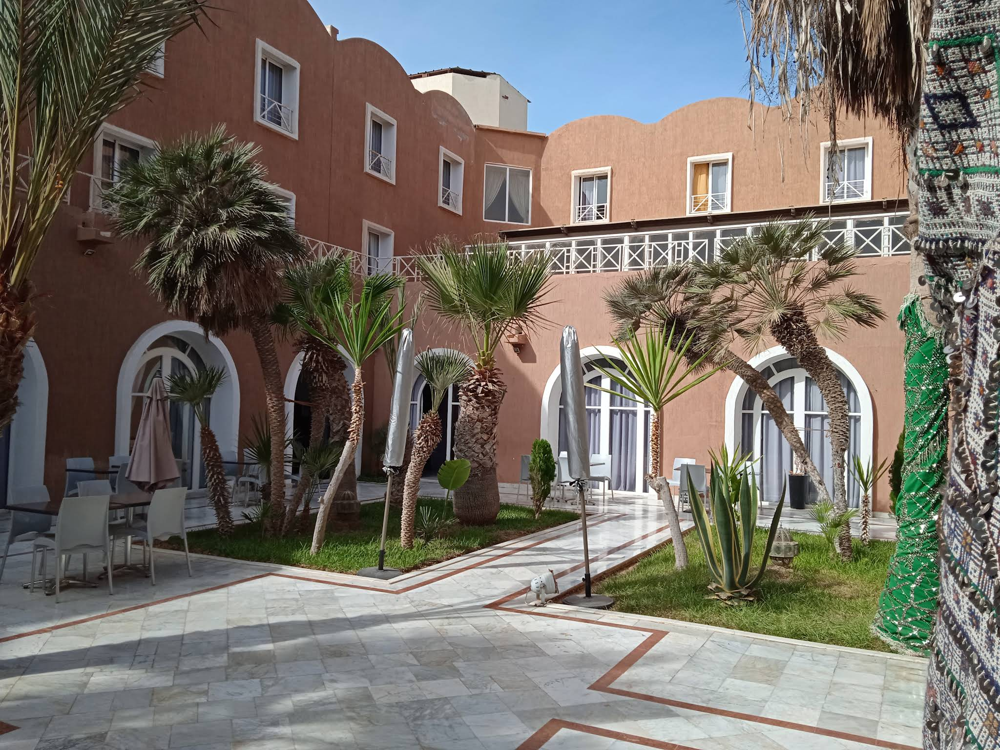
L'un des hôtels les plus célèbres et luxueux de Laâyoune. Doté d'une piscine extérieure très appréciée lors des journées chaudes, il offre des chambres spacieuses et un service de grande qualité au cœur même du centre-ville.
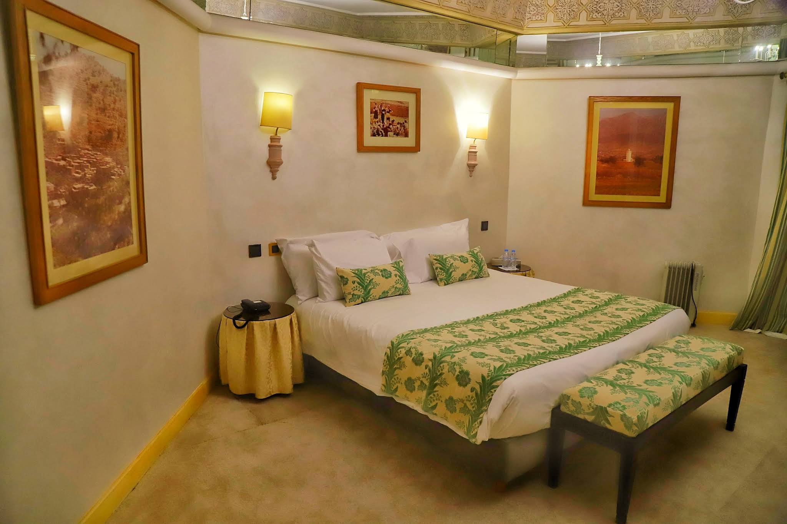
Un établissement emblématique qui a conservé le charme de ses origines hispaniques. Rénové pour répondre aux standards modernes, il propose un cadre élégant, de jolis jardins intérieurs et une ambiance très calme et sécurisée.
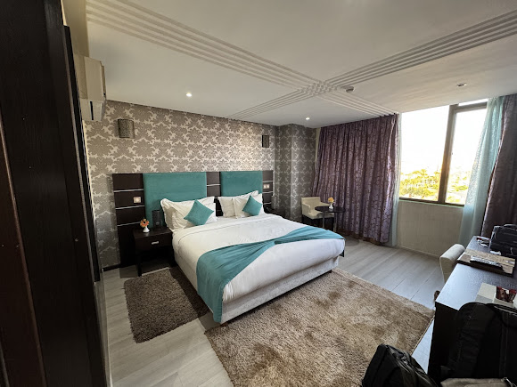
Petit établissement au caractère authentique. Il est particulièrement apprécié pour son hospitalité chaleureuse typiquement sahraouie, sa propreté irréprochable et sa proximité avec les marchés et la place centrale.
Découvrez la richesse culinaire et les tables mythiques de Laâyoune.
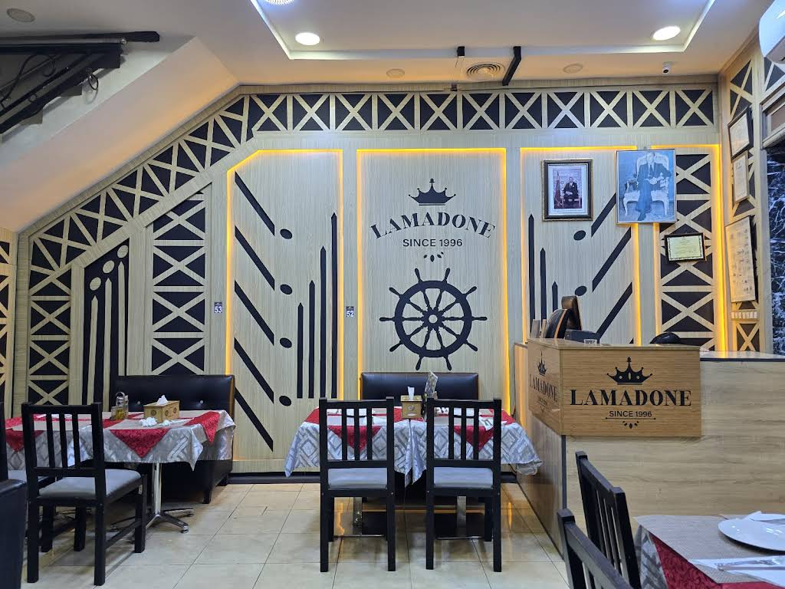
Une adresse chaleureuse et conviviale reconnue pour sa cuisine savoureuse. La Madone propose une belle sélection de plats alliant spécialités locales et classiques internationaux, le tout dans une atmosphère accueillante, parfaite pour partager un excellent repas.
Localiser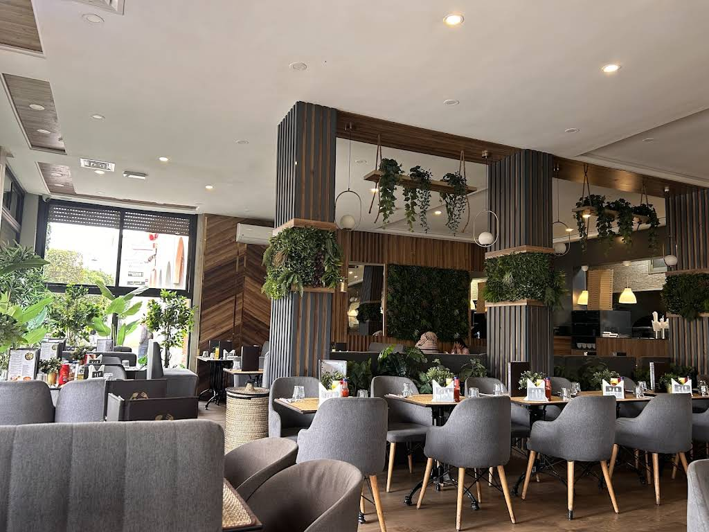
Une belle adresse offrant un cadre agréable pour se détendre. Le Restaurant Gardénia propose une carte variée mêlant des saveurs marocaines authentiques et des plats internationaux, le tout servi dans une ambiance paisible et chaleureuse.
Localiser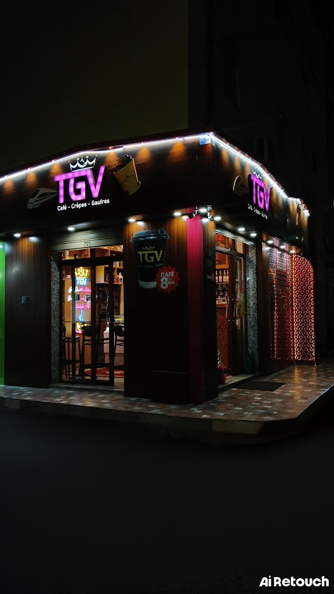
Une pause gourmande idéale pour les amateurs de douceurs ! Le Café TGV vous accueille dans un cadre moderne pour déguster de délicieuses crêpes, des gaufres, ainsi que des boissons chaudes. Ne manquez pas leur fameux café à seulement 8 Dhs.
Localiser